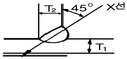

방사선비파괴검사기능사 (2013-10-12 기출문제)
1과목: 방사선투과시험법
1. 페인트가 칠하여진 표면에 침투탐상시험을 해야 할 때의 첫 단계 작업은?
- 표면에 조심스럽게 침투액을 뿌린다.
- 페인트를 완전히 제거한다.
- 세척제로 표면을 완전히 닦아낸다.
- 페인트로 매끄럽게 칠하여진 면을 거칠게 하기 위하여 철솔질을 한다.
(정답률: 71%)

2. 다음 중 와전류탐상시험 방법이 아닌 것은?
- 펄스 에코검사
- 임피던스검사
- 위상분석시험
- 변조분석시험
(정답률: 56%)
3. 침투탐상시험에서 침투액이 고체 표면에 적용될 액체와 고체 표면이 이루는 각을 접촉각이라 하며, 액체가 고체 표면을 적시는 능력을 무엇이라고 하는가?
- 밀도
- 적심성
- 점성
- 표면장력
(정답률: 80%)
4. 납(Pb)과 같이 비중이 큰 재료에 효율적으로 작용 할 수 있는 비파괴검사법은?
- 적외선검사(IRT)
- 음향방출시험(AE)
- 방사선투과검사(RT)
- 중성자투과검사(NRT)
(정답률: 69%)
5. 다음 중 누설검사법에 해당되지 않는 것은?
- 가압법
- 감압법
- 수직법
- 진공법
(정답률: 81%)
6. 자분탐상검사에서 자화방법 중 원형자계를 발생시키는 방법이 아닌 것은?
- 축통전법
- 극간법
- 직각통전법
- 프로드법
(정답률: 50%)
7. 시방서의 요구에 맞는 검사를 수행하기 위해 특정 기법의 적용을 순서대로 상세하게 기술한 문서를 무엇이라 하는가?
- 검사사양서
- 검사지침서
- 검사요구서
- 검사절차서
(정답률: 70%)
8. 두께 100mm 인 강판 용접부에 대한 내부균열의 위치와 깊이를 검출하는데 가장 적합한 비파괴검사법은?
- 방사선투과시험
- 초음파탐상시험
- 누설탐상시험
- 침투탐상시험
(정답률: 71%)
9. 다음 중 와전류탐상시험에서 와전류의 분포 및 강도의 변화에 영향을 주는 인자와 가장 거리가 먼 것은?
- 시험체의 전도도
- 시험체의 크기와 형태
- 접촉 매질의 종류와 양
- 코일과 시험체 표면사이의 거리
(정답률: 52%)
10. 누설시험의 “가연성 가스” 의 정의로 옳은 것은?
- 폭발범위 하한이 20% 인 가스
- 폭발범위 상한과 하한의 차가 10% 인 가스
- 폭발범위 하한이 10% 이하 또는 상한과 하한의 차가 20% 이상인 가스
- 폭발범위 하한이 20% 이하 또는 상한과 하한의 차가 10% 이상인 가스
(정답률: 50%)
11. 방사선투과시험에서 필름 현상온도를 15.5℃에서 24℃로 상승시킴에 따라 현상시간은 어떻게 해야 하는가?
- 항상 5분으로 한다.
- 15.5℃ 때보다 시간을 길게 한다.
- 15.5℃ 때보다 시간을 짧게 한다.
- 현상온도와 현상시간은 서로 무관한 함수이므로 15.5℃ 때와 같은 시간으로 한다.
(정답률: 81%)
12. 비파괴검사법 중 철강 제품의 표면에 생긴 미세한 균열을 검출하기에 가장 부적합한 것은?
- 방사선투과시험
- 와전류탐상시험
- 침투탐상시험
- 자분탐상시험
(정답률: 77%)
13. 다음 중 자분탐상 시험방법만으로 조합된 것은?
- 관통법과 공진법
- 투과법과 건식법
- 극간법과 코일법
- 내삽법과 프로브법
(정답률: 85%)
14. 금속재료의 결함탐상에 일반적으로 사용되는 초음파탐상시험의 주파수 범위에 해당되는 것은?
- 0.5KHz
- 1KHz
- 2MHz
- 20MHz
(정답률: 70%)
15. 다음 중 기체가 방사선에 충돌하여 이온(ion)화 하는 성질을 아용한 기기는?
- X-선 변압기
- 필름 농도계
- 필름 관찰기
- 방사선 측정기
(정답률: 58%)
16. X-선 발생장치의 작동주가 (duty cycle) 가 50%인 장비로 작업할 때의 설명으로 가장 알맞은 것은?
- 연속촬영이 가능하다.
- 5분 촬영시 0.5분 쉬면 된다.
- 5분 촬영시 5분 쉬면 된다.
- 5분 촬영시 50분 쉬면 된다.
(정답률: 71%)
17. 배관의 원주 용접부의 방사선 투과검사에서 선원을 관 원주의 내부 중심에 위치시켜 촬영하는 방법에 관한 설명으로 틀린 것은?
- 시험체의 외경이 100mm이하인 경우에만 적용할 수 있다.
- 1회의 방사선 노출로 전체 원주 용접부를 검사하는 것이 가능하다.
- 시험체 임의의 지점에서도 방사선이 필름에 대하여 수직으로 투과하므로 선명도가 좋아진다.
- 모든 방사선 사진에 투과도계의 영상이 반드시 나타날 필요는 없다.
(정답률: 30%)
18. 필름상에 생긴 X선 회절에 의한 얼룩점(반점)을 제거하기 위한 방법으로 가장 적합한 것은?
- 관전압을 올린다.
- 초점거리를 줄인다.
- 투과도계를 사용한다.
- 금속형광 증감지를 사용한다.
(정답률: 56%)
19. 코발트(CO-60)의 반감기로 옳은 것은?
- 약 2.3년
- 약 5.3년
- 약 7.3년
- 약 9.3년
(정답률: 55%)
20. X선발생장치를 투과 시험용으로 선택할 때 고려할 내용과 거리가 먼 것은?
- 방사선의 강도
- 사용 회수
- 방사선의 투과능력
- X선관의 X선 빔행정거리
(정답률: 33%)
2과목: 방사선안전관리 관련규격
21. 방사선 투과사진을 관찰한 결과 후면의 상이 시험체의 상에 겹쳐서 나타났을 때 이를 없애기 위한 효과적인 촬영방법은?
- 조리개를 사용한다.
- 선원의 강도를 높인다.
- 납글자 “B"를 사용한다.
- 납판을 필름 후면에 놓는다.
(정답률: 80%)
22. 필름 입상성이 증가하는 요인을 올바르게 나타낸 것은?
- 필름의 속도 감소 ,방사선의 에너지 감소
- 필름의 속도 감소 ,방사선의 에너지 증가
- 필름의 속도 증가 ,방사선의 에너지 감소
- 필름의 속도 증가 ,방사선의 에너지 증가
(정답률: 48%)
23. 방사선투과검사에서 작은 결함을 보다 쉽게 식별하기 위하여 가능한 한 투과사진의 콘트라스트(contrast)를 높이려고 할 때 사용할 수 있는 방법으로 적절하지 않은 것은?
- 필름 콘트라스트(film contrast) 가 큰 특성을 갖는 X선 필름을 선택한다.
- 흡수계수 μ 를 크게 하기 위하여 에너지가 낮은 방사선을 사용한다.
- 조리개와 차폐마스크를 사용하여 방사선 조사 범위를 줄임으로써 산란비를 작게 한다.
- 방사선 노출시간을 줄이기 위하여 초점-필름간 거리를 줄인다.
(정답률: 54%)
24. 자분탐상검사,침투탐상검사,와전류탐상검사와같은 비파괴검사법과 비교하여 방사선투과검사의 주요 장점에 관한 설명으로 옳지 않은 것은?
- 방사선 빔 방향에 수직한 면상 결함의 검출에 효과적이다.
- 내부결함을 검출할 수 있다.
- 검사결과의 반영구적인 기록을 얻을 수 있다.
- 조성의 주요변화에 대한 검출이 가능하다.
(정답률: 66%)
25. 방사선투과사진의 현상 작업 중 20℃ 이상의 온도에서 필름의 세척을 오래하면 어떤 현상이 생기는가?
- 젤라틴의 결정화
- 젤라틴의 연질화
- 노란색의 얼룩발생
- 포그(fog)발생
(정답률: 62%)
26. 여러 가지 방사선 중 X선과 비교할 때 γ선의 특징으로 틀린 것은?
- 이동성이 좋다.
- 외부전원이 필요 없다.
- 안전관리가 간단하다.
- 짧은 초점-필름 거리가 필요한 경우 적당하다.
(정답률: 66%)
27. 방사선 발생장치의 X선관 내부의 집속관 (focusing cup)의 설명으로 틀린 것은?
- 음극의 구성요소이다.
- 음전자를 집속한다.
- 발생된 X선의 확산을 방지한다.
- X선 발생효율을 높인다.
(정답률: 36%)
28. 강 용접 이음부의 방사선투과 시험방법(KS B 0845)에 따라 모재두께가 6mm인 강판의 맞대기용접부를 상질A급으로 방사선투과검사 할 때 촬영된 투과도계의 식별 최소 선지름은 얼마 이하이어야 하는가?
- 0.1mm 이하
- 0.125mm이하
- 0.16mm이하
- 0.25mm이하
(정답률: 42%)
29. 원자력법에서 규정한 대통령령이 정하는 방사선 발생장치에 속하지 않는 것은?
- 엑스선 발생장치
- 사이크로트론
- GM카운터
- 선형가속장치
(정답률: 75%)
30. 주강품의 방사선투과 시험방법(KS D 0227)에 의해 투과 두께가 6mm인 경우 A급 상질에 사용되는 일반형 투과도계로 옳은 것은?
- 02F
- F020
- 02A
- A020
(정답률: 70%)
31. 강 용접 이음부의 방사선투과 시험방법(KS B 0845)에서 강판 맞대기 용접이음부를 검사하는 경우 투과사진의 필요조건이 아닌 것은?
- 계조계의 값
- 시험부의 유효 길이
- 투과도계의 식별 최소 선지름
- 시험부의 투과 두께가 최대가 되는 선원의 조사 방향
(정답률: 35%)
32. 원자력법시행령에 의한 비파괴검사 목적 이동사용자의 허가기준으로서 장비에 대한 기준이 올바른 것은?
- 방사선투과 검사장비 : 1대 이상
- 방사선측정 장비 중 방사선 측정기 : 2대 이상
- 방사선방호 장비 중 경고등 : 5개 이상
- 방사선측정 장비 중 방사선 경보기 : 10개 이상
(정답률: 54%)
33. 강 용접 이음부의 방사선투과 시험방법(KS B0845)에 따라 촬영조건 결정시 꼭 계조계가 필요한 경우는?
- 모재두께 50mm 이상인 평판 맞대기 용접부 촬영시
- 모재두께 50mm 이하인 평판 맞대기 용접부 촬영시
- 모재두께 100mm 이하인 평판 맞대기 용접부 촬영시
- 모재두께와 관계없이 평판 맞대기 용접부 촬영시
(정답률: 59%)
34. 강용접 이음부의 방사선투과 시험방법(KS B 0845)에 따라 모재의 두께가 15mm인 강판의 맞대기 용접 이음의 촬영에서 두께가 1.0mm인 계조계를 사용하였다. 농도 측정결과 계조계에 근접한 모재 부분의 농도는 2.0이고 계조계 중앙부분의 농도는 2.4였다. 계조계의 값은?
- 0.1
- 0.2
- 0.25
- 0.4
(정답률: 37%)
35. 원자력법에 규정된 선량한도의 내용으로 틀린 것은?
- 방사선작업종사자의 유효선량은 연간 50mSv를 초과할 수 없다.
- 운반종사자의 유효선량은 연간 12mSv를 초과할 수 없다.
- 방사선작업종사자의 수정체에 대한 등가선량은 연간 150mSv를 초과할 수 없다.
- 일반인의 발에 대한 등가선량은 연간 15mSv를 초과할 수 없다.
(정답률: 55%)
36. 강용접 이음부의 방사선 투과 시험방법(KS B 0845)에서 강판 맞대기 용접 이음부의 투과시험에 사용되는 계조계와 모재 두께사이의 관계가 옳은 것은?
- 모재 두께 10mm 이하 : 5형인 계조계 사용
- 모재 두께 10mm 초과 20mm 이하 : 10형인 계조계 사용
- 모재 두께 20mm 초과 40mm 이하 : 20형인 계조계 사용
- 모재 두께 40mm 초과 60mm 이하 : 30형인 계조계 사용
(정답률: 73%)
37. 밀봉선원을 사용하는 작업장에서 방사선 장해방어를 위하여 갖추어야 할 필요 설비가 아닌 것은?
- 차폐 설비
- 경보장치
- 보관 설비
- 선원 폐기 설비
(정답률: 68%)
38. 알루미늄 평판 접합 용접부의 방사선투과 시험방법(KS D 0242)의 촬영배치에서 방사선원과 투과도계 사이의 거리는 시험부 유효길이의 n배 이상으로 하도록 규정하고 있다. 상질이 A급일 때 n의 상수 값은 얼마인가?
- 2
- 3
- 4
- 5
(정답률: 69%)
39. 주강품의 방사선 투과 시험방법(KS D 0239)에 따라 촬영할 때, 영상질의 저하를 초래하는 산란선의 저감 방법으로 틀린 것은?
- 시험체 근처의 바닥면은 납판으로 덮는다.
- 시험체는 가능한 한 바닥면에 밀착시켜 배치한다.
- X선 장치의 방사구에 조사통 또는 조리개판을 장착하고 촬영한다.
- 방사선속을 제한하는 기구를 사용할 수 없는 경우 넓은 조사실에서 촬영한다.
(정답률: 49%)
40. 티탄 용접부의 방사선투과 시험방법(KS D 0239)에서 양면 덧살이 있는 용접부를 이중벽 촬영할 때 재료 두께는?
- 2.0 × T
- 2.0 × T +2
- 2.0 × T +4
- 2.2 × T
(정답률: 68%)
3과목: 금속재료일반 및 용접 일반
41. 알루미늄 T형 용접부 방사선투과 시험방법(KS D 0245)에서 그림과 같이 한면 개선될 경우 재료 두께로 옳은 것은? (단, T1은 9mm, T2는 11mm, 조사각도는 45 〬이다.)

- 22mm
- 25mm
- 28mm
- 호칭두께로 한다.
(정답률: 46%)
42. 강용접 이음부의 방사선투과 시험방법(KS B 0845)에 따른 제2종 결함의 결함 분류에 관한 설명으로 틀린 것은?
- 제2종의 결함은 결함의 길이를 측정하고 결함 길이의 허용 한도 규정에 따라 1류, 2류, 3류 또는 4류로 분류한다.
- 2개 이상의 제2종 결함이 일직선상에 존재하고 결함과 결함의 간격이 큰 쪽 길이 이하인 경우는 각각의 결함 길이의 총합을 그 결함 군의 결함 길이로 한다.
- 결함 길이 값에 의해 1류로 분류된 경우에도 용입불량 또는 융합불량이 있으면 2류로 한다.
- 제1종결함 분류를 위한 시험 시야에 제2종 결함이 혼재하고 제1종과 제2종 분류가 같은 분류이면 혼재하는 부분의 분류는 분류 번호를 하나 크게 한다.
(정답률: 33%)
43. 비금속 개재물에 관한 설명 중 틀린 것은?
- 재료 내부에 점 상태로 존재한다.
- 인성을 증가시키나, 매짐의 원인이 된다.
- 열처리를 할 때에 개재물로부터 균열이 발생한다.
- 비금속 개재물에는 FeO3 , Fe0, Mn0, SiO2 등이 있다.
(정답률: 32%)
44. 고속도 공구강의 특징을 설명한 것 중 틀린 것은?
- 고속도 공구강은 2차 경화강이다.
- 고온에서 경도의 감소가 적은 것이 특징이다.
- 표준 고속도 공구강은 0.8~1.5%C, 18%W,4%Cr ,1%V, 그 외 Fe이다.
- Mo계 고속도 공구강은 열전도율이 나빠 열처리가 잘 되지 않는 특징이 있다.
(정답률: 70%)
45. Cu에 Pb을 28~42% , 2%이하의 Ni또는 Ag,0.8%이하의 Fe,1%이하의 Sn을 함유한 Cu합금으로 고속 회전용 베어링 등에 사용되는 합금은?
- 켈밋 메탈
- 코슨 합금
- 델타 메탈
- 에드미럴티 포금
(정답률: 73%)
46. 비정질 합금에 대한 설명으로 옳은 것은?
- 균질하지 않은 재료로써 결정이방성이 있다.
- 강도가 낮고 연성이 작고, 가공 경화를 일으킨다.
- 제조법에는 단롤법, 쌍롤법, 원심 급냉법 등이 있다.
- 액체 급냉법에서 비정질 재료를 용이하게 얻기 위해서는 합금에 함유된 이종원소의 원자반경이 같아야 한다.
(정답률: 38%)
47. 다음 중 주철의 성장 원인이라 볼 수 없는 것은?
- Si의 산화에 의한 팽창
- 시멘타이트의 흑연화에 의한 팽창
- A4 변태에서 무게 변화에 의한 팽창
- 불균일한 가열로 생기는 균열에 의한 팽창
(정답률: 58%)
48. 6:4 황동으로 상온에서 α + β 조직을 갖는 재료는?
- 알드리
- 알클래드
- 문쯔메탈
- 플래티나이트
(정답률: 80%)
49. 다음 중 주철의 주 합금원소로 옳은 것은?
- Fe-C
- Cu-Mn
- Al-Cu
- Co-Ti
(정답률: 78%)
50. 면심입방격자를 나타내는 기호로 옳은 것은?
- HCP
- BCC
- FCC
- BCT
(정답률: 77%)
51. 금속의 결정격자에서 공간격자는 무엇으로 구성 되어 있는가?
- 분자
- 쌍정
- 전위
- 단위격자
(정답률: 69%)
52. 금속의 재결정 온도, 가공도 등에 대한 설명으로 옳은 것은?
- 가공도가 클수록 재결정 온도는 낮다.
- 열시간이 길수록 재결정 온도는 높아진다.
- 재결정 입자의 크기는 가공도에 영향을 받지 않는다.
- 금속 및 합금은 종류에 관계없이 재결정온도가 같다.
(정답률: 42%)
53. 황동의 합금 주성분을 옳게 표시한 것은?
- Cu-Ti
- Cu-Zn
- Cu-Ni
- Cu-Sb
(정답률: 79%)
54. 표준 저항선, 열전쌍용 선으로 사용되는 Ni 합금인 콘스탄탄(constantan)의 구리 함유량은?
- 5~15%
- 20~30%
- 30~40%
- 50~60%
(정답률: 39%)
55. 다음 중 부식에 대한 저항성이 가장 강한 것은?
- 순철
- 연강
- 경강
- 고탄소강
(정답률: 45%)
56. 비중 7.14 용융점 419℃ 조밀 육방 격자인 금속으로 주로 도금, 건전지, 인쇄판, 다이 캐스팅용 및 합금용으로 사용되는 것은?
- Ni
- Cu
- Zn
- Al
(정답률: 60%)
57. 저용융점 합금(fusible alloy)의 원소로 사용되는 것이 아닌것은?
- W
- Bi
- Sn
- In
(정답률: 75%)
58. 직류용접시 정극성과 비교한 역극성(DCRP)의 특징 설명으로 올바른 것은?
- 모재의 용입이 깊다.
- 비드폭이 좁다.
- 용접봉의 용융이 느리다.
- 주철, 고탄소강, 합금강 용접시 적합하다.
(정답률: 38%)
59. 수직 자세나 수평필렛 자세에서 운봉법이 나쁘면 수직 자세에서는 비드 양쪽, 수평필렛 자세에서는 비드 위쪽 토우(toe)부에 모재가 오목한 부분이 생기는 것은?
- 오우버랩
- 스패터
- 자기불림
- 언더컷
(정답률: 63%)
60. 33.7 리터의 산소 용기에 150kgf/cm2로 산소를 충전하여 대기중에서 환산하면 산소는 몇 리터인가?
- 5⑤5
- 6015
- 7010
- 7⑤5
(정답률: 54%)